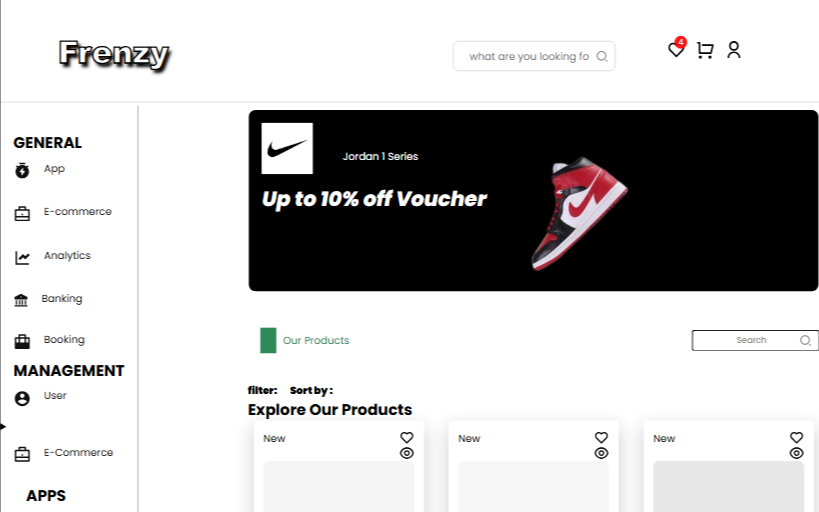
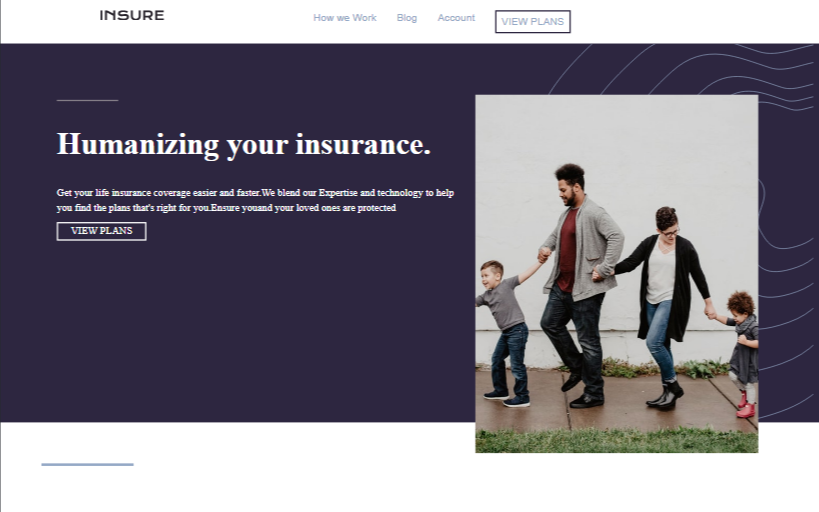
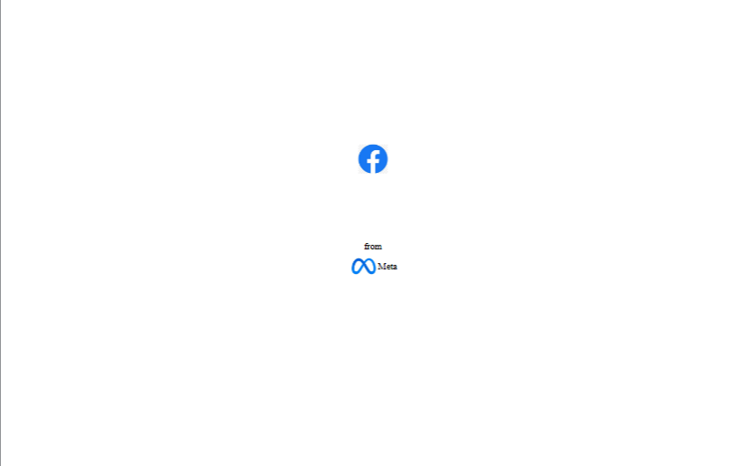

PORTFOLIO
coffeeweb
Coincares CoinCares was created to address the 560 million potential donors globally who are sidelined by platforms that rely heavily on traditional payment methods, which slow down donation targets. We chose Solana for our launch due to its high-speed transactions and near-zero fees. With Solana, users can donate directly to causes using integrated payment solutions like Solana Pay or Helio Pay, with the additional option to donate via Blinks. As we grow, we plan to integrate other cryptocurrencies, such as BTC, SOL, ETH, and Base, to give users more flexible donation options Work-in-progress...
frenzy
Coincares CoinCares was created to address the 560 million potential donors globally who are sidelined by platforms that rely heavily on traditional payment methods, which slow down donation targets. We chose Solana for our launch due to its high-speed transactions and near-zero fees. With Solana, users can donate directly to causes using integrated payment solutions like Solana Pay or Helio Pay, with the additional option to donate via Blinks. As we grow, we plan to integrate other cryptocurrencies, such as BTC, SOL, ETH, and Base, to give users more flexible donation options.Work-in-progress..
Real-estate
Coincares CoinCares was created to address the 560 million potential donors globally who are sidelined by platforms that rely heavily on traditional payment methods, which slow down donation targets. We chose Solana for our launch due to its high-speed transactions and near-zero fees. With Solana, users can donate directly to causes using integrated payment solutions like Solana Pay or Helio Pay, with the additional option to donate via Blinks. As we grow, we plan to integrate other cryptocurrencies, such as BTC, SOL, ETH, and Base, to give users more flexible donation options.Work-in-progress...
frenzy
Coincares CoinCares was created to address the 560 million potential donors globally who are sidelined by platforms that rely heavily on traditional payment methods, which slow down donation targets. We chose Solana for our launch due to its high-speed transactions and near-zero fees. With Solana, users can donate directly to causes using integrated payment solutions like Solana Pay or Helio Pay, with the additional option to donate via Blinks. As we grow, we plan to integrate other cryptocurrencies, such as BTC, SOL, ETH, and Base, to give users more flexible donation options.Work-in-progress...
coffeeweb
Coincares CoinCares was created to address the 560 million potential donors globally who are sidelined by platforms that rely heavily on traditional payment methods, which slow down donation targets. We chose Solana for our launch due to its high-speed transactions and near-zero fees. With Solana, users can donate directly to causes using integrated payment solutions like Solana Pay or Helio Pay, with the additional option to donate via Blinks. As we grow, we plan to integrate other cryptocurrencies, such as BTC, SOL, ETH, and Base, to give users more flexible donation options Work-in-progress...
Coincares CoinCares was created to address the 560 million potential donors globally who are sidelined by platforms that rely heavily on traditional payment methods, which slow down donation targets. We chose Solana for our launch due to its high-speed transactions and near-zero fees. With Solana, users can donate directly to causes using integrated payment solutions like Solana Pay or Helio Pay, with the additional option to donate via Blinks. As we grow, we plan to integrate other cryptocurrencies, such as BTC, SOL, ETH, and Base, to give users more flexible donation options.Work-in-progress..frenzy
Coincares CoinCares was created to address the 560 million potential donors globally who are sidelined by platforms that rely heavily on traditional payment methods, which slow down donation targets. We chose Solana for our launch due to its high-speed transactions and near-zero fees. With Solana, users can donate directly to causes using integrated payment solutions like Solana Pay or Helio Pay, with the additional option to donate via Blinks. As we grow, we plan to integrate other cryptocurrencies, such as BTC, SOL, ETH, and Base, to give users more flexible donation options.Work-in-progress...